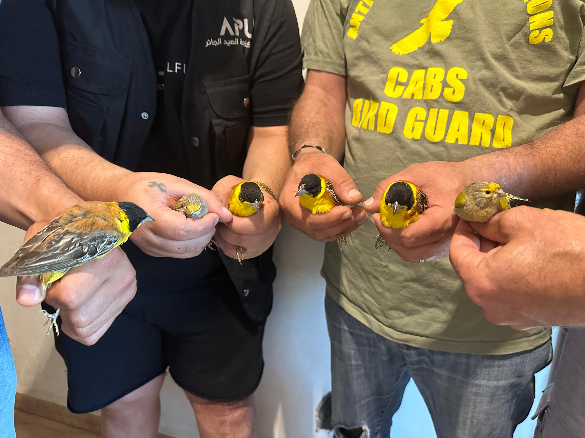
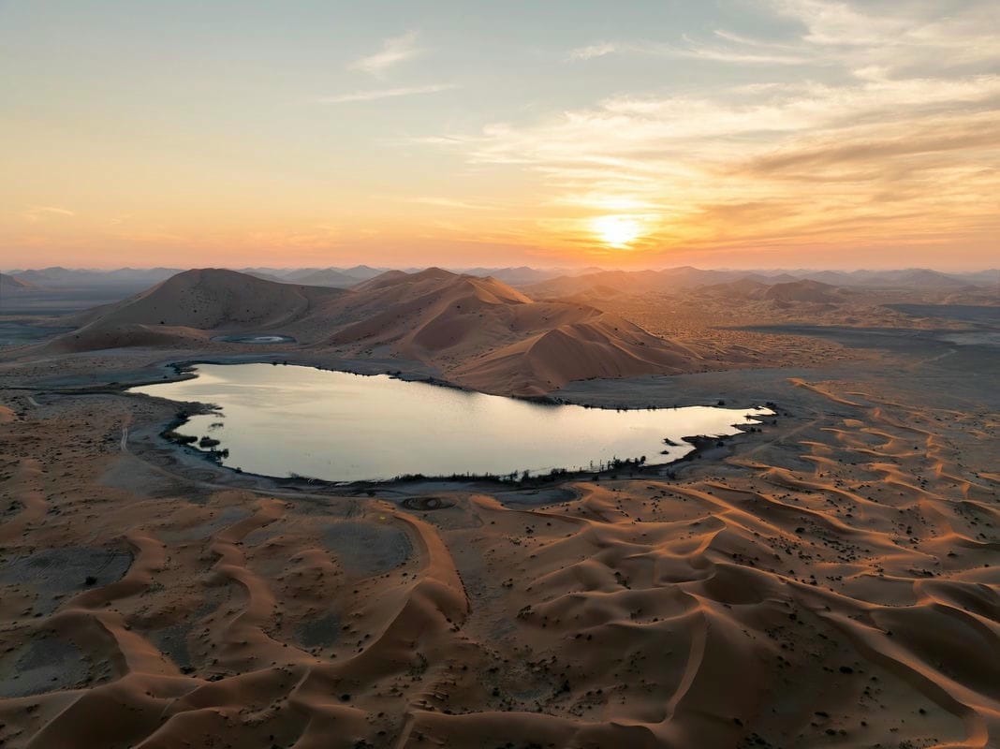
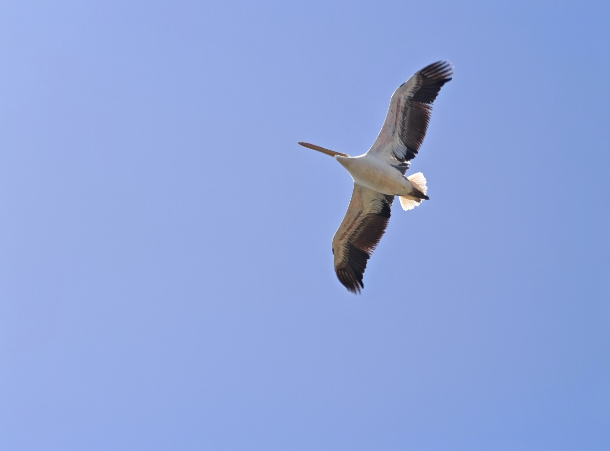
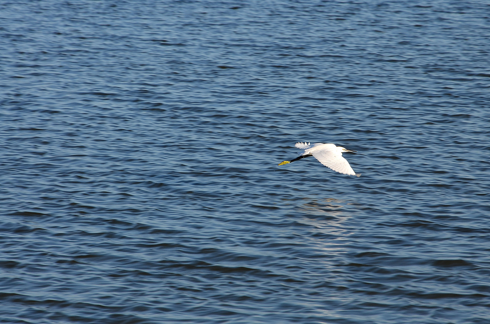

La tourterelle des bois franchit les frontières de la chasse : une voie migratoire européenne se rétablit, une autre reste sous pression28 septembre 2026
De la Sicile au Liban : la bataille pour protéger les oiseaux migrateurs de la chasse illégale27 septembre 2026
Mashhoor remporte la Coupe de la fête nationale saoudienne à la clôture de la saison hippique de Taïf27 septembre 2026
Sur le terrain : Beretta A400 Xtreme Plus ou Benelli SBE 3 ? Emprunt de gaz contre inertie23 septembre 2026
Sept oiseaux migrateurs disparus ou présumés éteints en 150 ans : comment leurs routes se sont brisées22 septembre 2026
Égypte : nouvelles règles de chasse et interventions sur le terrain au début de la migration d’automne20 septembre 2026
Les destructions environnementales dans le sud du Liban menacent une grande voie de migration des oiseaux20 septembre 2026
Dans les archives de Sayd : un parcours de conscience et de responsabilité, des voix au service de la nature (2016–2024)19 septembre 2026
80 000 visiteurs et 158 exposants de 15 pays : Suhail 2026 clôt une décennie de passion pour la chasse et la fauconnerie13 septembre 2026
Protéger les oiseaux migrateurs d’automne au Liban : un partenariat de terrain depuis 2017, selon Al-Khatib13 septembre 2026
L’Arabie saoudite ouvre sa sixième saison de chasse et renforce les règles : 5 000 riyals d’amende dans les zones interdites9 septembre 2026
Pélican blanc | Photo de Nayef Krayem — autoroute du Metn, printemps 20269 septembre 2026
Avec la migration d’automne… comment le monde protège-t-il les oiseaux et encadre-t-il la chasse ?8 septembre 2026
Au début de la migration d’automne… une action de terrain pour protéger les voies des oiseaux au Liban7 septembre 2026